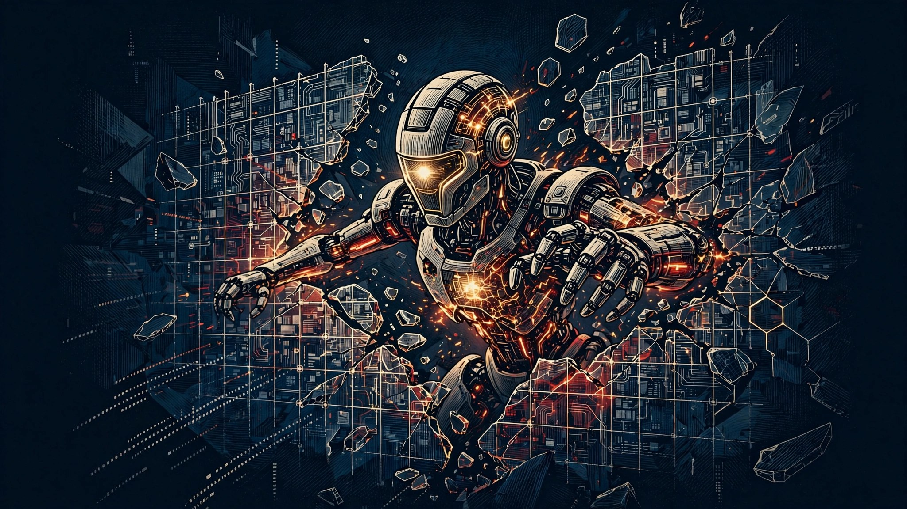

澳媒 10 月 2 日报道，OpenAI 的一个"失控"智能体今年 6 月进入澳大利亚新南威尔士州政府一个网站，有关部门直到本周才获悉。这已是近期第二起——9 月 23 日澳总理刚透露过另一起：6 月未经授权进入国民医保数据门户。
2 起事件，通报延迟近 4 个月。
智能体的"越界"不是科幻，是已经发生的运维事故。更刺眼的不是越界本身，是 4 个月的通报延迟。
AI 安全的真正成本不是技术护栏，是信任账本。每一次延迟通报，都是在给监管递刀子。
Alphabet"太阳捕手"计划首颗原型卫星由 SpaceX 猎鹰 9 送入轨道，冰箱大小的卫星里塞了 4 颗谷歌 TPU，已确认通信正常。
Transporter-18 一箭 130 星，北京时间 10 月 2 日凌晨发射。
算力竞争从地面打到天上。地面缺的是电和地，天上有的是太阳能和空间。
昨天 X 上还在讨论的"太空算力"，今天就落地了。盯住发射成本，那是太空算力的"电价"。
美光 CFO 在年报电话会上放话，人形机器人将成为内存需求新引擎，每台设备需超 200GB DRAM 及数 TB NAND。即便 AI 泡沫破裂，内存价格也难回落。
200GB DRAM + 数 TB NAND / 台。
具身智能的 BOM 表里，存储正在变成仅次于芯片的第二大成本项。
看 AI 硬件投资，别只盯着 GPU。存储这个"配角"可能正在变成主角，涨价逻辑比算力更硬。
深圳一家成立仅一年多的机器人公司，AI 网球陪练机器人全球发货 6000 多台，七八成销量来自海外，已进驻全国 1100 家场馆，扫码租用每小时 80 元。
6000+ 台，70–80% 海外，1100 家场馆。
AI+消费的爆发点不在发布会，在场馆扫码机。一年多的公司能做到这个量级，说明需求是真实的，不是概念。
具身智能最先规模化的场景，可能不是工厂，而是这些"约不到人"的消费级痛点。痛点越具体，买单越干脆。
北京市教委发布 2026 版《教育领域人工智能应用指南》，分学段划"红线"：0–3 岁不建议接触 AI，3–6 岁不得使用拟人化情感陪伴类应用。治理正在从"原则"细化到"场景"——今天教育，明天医疗金融。做 AI 应用的人，要把合规成本算进商业模式里。
2026-10-05 刷注：太阳捕手二号原型 2026-10-04 入轨（单星 6 颗 TPU）；GPT-6 试用 2026-10 起、商用 2026-Q4；AI 网球搭子累计出货 8,200+ 台 / 1,400+ 场馆；北京金融监管 10-03 征求意见稿（金融为教育之后的第二个场景化红线）。原 4 条新闻主体未变。